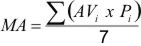

I. EMENTA (68 horas aulas - 4 aulas semanais - Oferecimento semestral) Introdução à mecanização zootécnica. Ferramentas e Oficinas. Motores de combustão interna. Tratores agrícolas. Manutenção. Tração animal e mecânica. Estudos orgânico e operacional de máquinas e implementos: arados, grades, subsoladores, semeadoras-adubadoras, roçadoras, colhedoras de forragem, máquinas para fenação. Planejamento e custos em sistemas mecanizados. II. AVALIAÇÃO DA DISCIPLINA Descrição | Data | Peso | | AV1 - Nota 1ª prova | | P1=2 | | AV2 - Nota 2ª prova | | P2=2 | | AV3 - Trabalhos e Relatórios | - | P3=1 | | AV4 - Projeto final | | P4=2 | | MA - Média anual | - | - |
Obs: SUB: - PF:  i = 1 .. 4Trabalhos: consiste em revisões bibliográficas de determinado assunto, contendo: título, introdução, desenvolvimento, conclusão e bibliografia consultada. Relatórios: desenvolvidos geralmente durante as aulas práticas (ou teóricas), conforme solicitado, com o objetivo específico de fixação de conhecimento. Deverá apresentar: título, introdução, objetivos, metodologias, resultados, discussão, conclusões ou considerações finais, e bibliografia consultada. Projeto Final: projeto de mecanização zootécnica. Deverá apresentar: título, introdução, objetivos, metodologias, resultados, discussão, conclusões ou considerações finais e bibliografia consultada. | | III. BIBLIOGRAFIA RECOMENDADA BALASTREIRE, L.A. Máquinas agrícolas. São Paulo, Ed. Manole, 1987. 310p. BERETTA, C.C. Tração animal na agricultura. São Paulo: Nobel, 1988. COAN, O. Ferramentas para manutenção de máquinas e implementos agrícolas. Jaboticabal: FUNEP, 1997. DIAS, G P; VIEIRA, L B.; NEWES, B. Manutenção de trator agrícola de pneu: introdução. Viçosa: Editora UFV, 1996. FARRET, F.A. Aproveitamento de pequenas fontes de energia elétrica. Santa Maria : Ed. da UFSM, 1999. 245p. GRIFFIN , G.A. Combine harvesting: Operating maintaining and improving efficiency of combines. Fourth Edition. Fundamentals of Machine Operation. John Deere & Company/Malone. Illinois, 1991. 207p. MACHADO, A.L.T. & REIS, A.V. Máquinas para o preparo do solo, semeadura, adubação e tratamentos culturais. Pelotas, Ed. UFPel, 1996. 280p. MIALHE, L.G. Máquinas motoras na agricultura. São Paulo, Ed. da USP,1980. Vol. 1 e 2. MORAES, M.L.B. & REIS, A.V. Máquina para colheita e processamento dos grãos. Pelotas, Ed. UFPel, 1999. 150p. ORTIZ-CAÑAVATE, J. & HERNANZ, J.L. Tecnia de la mecanizacion agraria. Madrid , Editora Madrid-Prensa, 1989. 641p. REIS, A.V.; MACHADO, A.L.T. & TILMANN, C.A. Motores, tratores, combustíveis e lubrificantes. Pelotas, Ed. UFPel, 1999. 315p. RIDER, A.R.; BARR, S.D. & PAULI, A.W. Hay and forage harvesting. Fourth Edition. Fundamentals of Machine Operation. John Deere & Company/Moline, lllinois, 1993. 261p. SAAD, O. Máquinas e técnicas de preparo inicial do solo. 5. ed. São Paulo: Nobel, 1984. SILVEIRA, G.M. Máquinas para a pecuária. São Paulo, ed. Nobel, 1997. 167p.
|